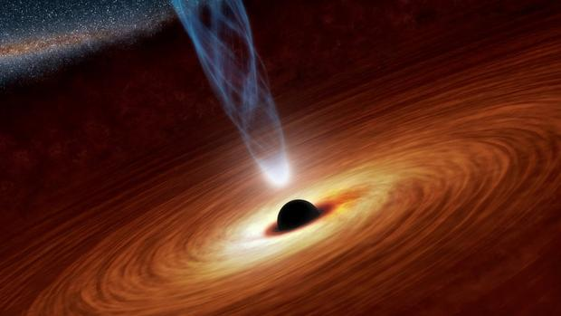
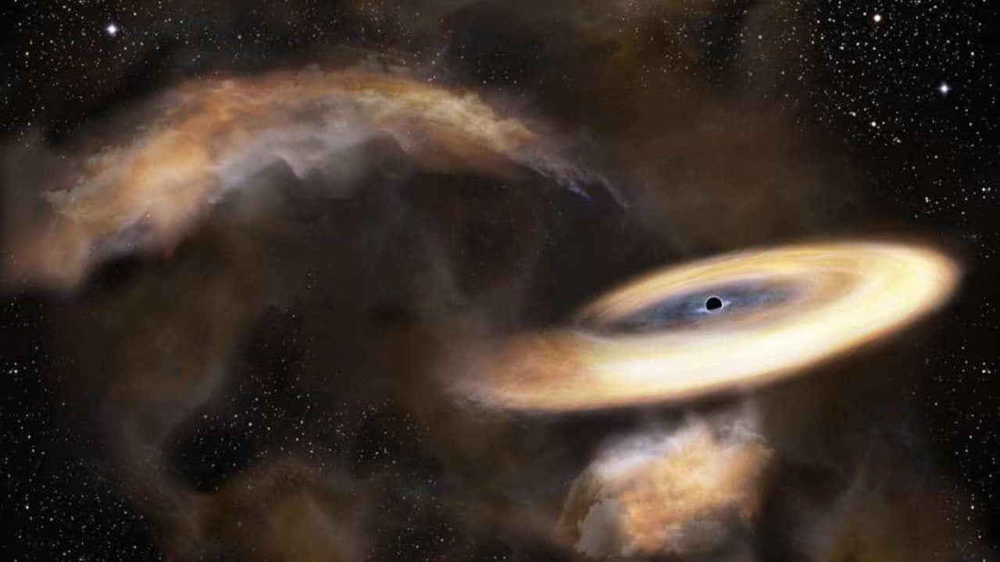

Un agujero negro estelar es un agujero negro formado por el colapso gravitacional de una estrella masiva (más de 8 masas solares) al final de su tiempo de vida. El proceso es observado como una explosión de supernova o una explosión de rayos gamma. Este agujero negro va a tener una masa de más de 3 masas solares. El agujero negro estelar más grande que se conoce (hasta el 2001) posee 14 masas solares.
Los agujeros supermasivos quiere decir que es muy grande, muy abundante, muy concentrado. ... En Astronomía los agujeros negros supermasivos son aquéllos que se tienen una masa de millones de masas solares. Hay una teoría bastante secundada por los astrónomos que hay una en el centro de nuestra Vía láctea.
Los agujeros negros con una masa inferior a un millón de veces la del Sol podrían resultar clave para entender cómo se formaron sus hermanos supermasivos y las galaxias que los albergan. Desde principios de siglo sabemos que casi todas las galaxias de gran tamaño albergan un inmenso agujero negro: un objeto cuya atracción gravitatoria exhibe una intensidad tal que ni siquiera la luz puede escapar. Al morir, algunas estrellas pueden convertirse en agujeros negros con masas de entre tres y cien veces la del Sol.